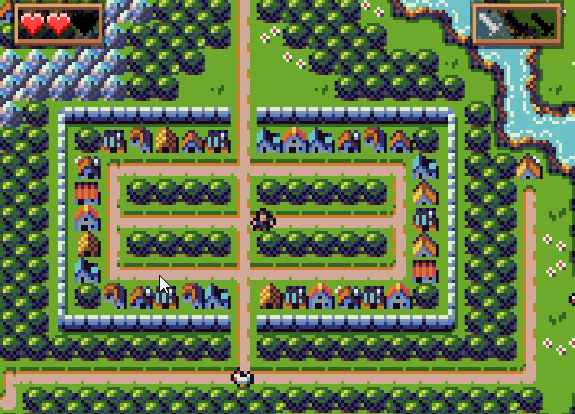
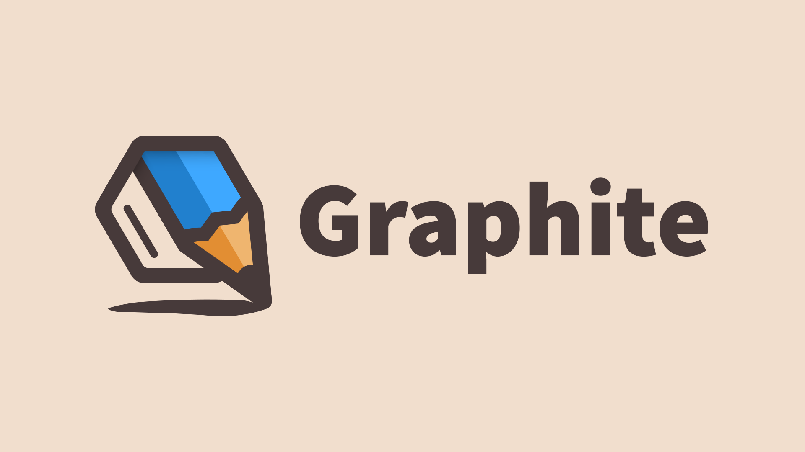
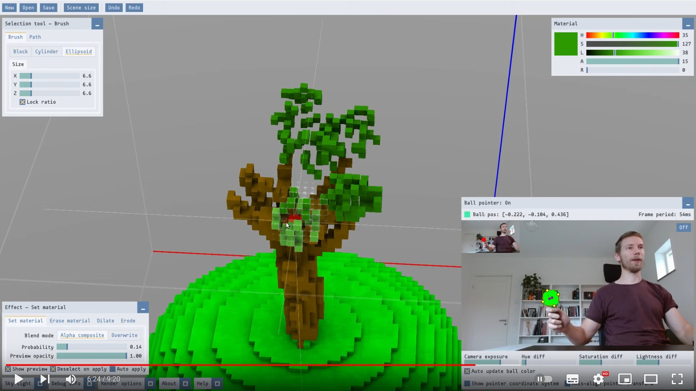

This Month in Rust GameDev #28 - November 2021
Welcome to the 28th issue of the Rust GameDev Workgroup's monthly newsletter. Rust is a systems language pursuing the trifecta: safety, concurrency, and speed. These goals are well-aligned with game development. We hope to build an inviting ecosystem for anyone wishing to use Rust in their development process! Want to get involved? Join the Rust GameDev working group!
You can follow the newsletter creation process by watching the coordination issues. Want something mentioned in the next newsletter? Send us a pull request. Feel free to send PRs about your own projects!
- Rust GameDev Meetup
- Game Updates
- Learning Material Updates
- Engine Updates
- Tooling Updates
- Library Updates
- Other News
- Discussions
- Requests for Contribution
Rust GameDev Meetup

The eleventh Rust Gamedev Meetup happened in November. You can watch the recording of the meetup here on Youtube. The meetups take place on the second Saturday every month via the Rust Gamedev Discord server and are also streamed on Twitch. If you would like to show off what you've been working on at the next meetup on December 11th, fill out this form.
Game Updates
Flesh
 The melee weapon in action
The melee weapon in action
Flesh by @im_oab is a 2D-horizontal shmup game with hand-drawn animation and an organic/fleshy theme. It is implemented using Tetra. This month's updates include:
- Support different types of ships that players can choose.
- Add a melee weapon.
One-Click Ninja
 Screenshot of One-Click Ninja
Screenshot of One-Click Ninja
One-Click Ninja is a rhythm game made in 10 days for 1-Button Jam 2021, written in Rust using the Bevy engine.
The source is available MIT licensed on GitHub, and you can play in your browser on itch.io.
Fish Fight: The Prequel
Fish Fight is a fast-paced 2D brawler game, played by 1-4 players online or on a shared screen, built with macroquad game engine.
This month it got a trailer, and the game is now available to wishlist on Steam!
BITGUN

BITGUN (Steam, Twitter, Discord) by @LogLogGames is an action roguelike zombie shooter with lots of blood. The game is built using Godot and Rust (via godot-rust).
They recently implemented a mission system, where you can select one of three types of missions to go to from the central camp. One is to defend supplies from a horde of zombies, the second is to search a facility for some object or clear all the zombies and the last one is to fight your way through a tunnel full of spiders and other enemies! They also worked on a tutorial.
Halloween Mahjong Solitaire
 Screenshot of Halloween Mahjong Solitaire
Screenshot of Halloween Mahjong Solitaire
Halloween Mahjong Solitaire (GitHub) by @Syn-Nine is a game created for the Game Developers Refuge 4x4x4 Challenge in October 2021.
The challenge was to create a Halloween-themed game based on four emojis. In this case the chosen emoji combination was: skull_and_crossbones, bat, game_die, and shinto_shrine (‚ò†Ô∏è ü¶á üé≤ ‚õ©Ô∏è).
The game is part of an open source repository of several mini-games that use Syn9's Rust Mini Game Framework.
Country Slice

Country Slice is @anastasiaopara's hobby project, where users can draw a small scene, and their input is amplified with real-time procedural geometry generation.
Country Slice uses Bevy Engine for entity management, and has recently been ported to OpenGL (using gl-rs and glutin). It is being developed openly on GitHub.
You can follow the development of Country Slice on Twitter.
Veloren
A merchant paused in their travels
Veloren is an open world, open-source voxel RPG inspired by Dwarf Fortress and Cube World.
In November, Veloren started a new initiative to help new developers learn more about the codebase; the Veloren Reading Club. You can watch the first and second sessions now. Hats were merged, and a major rewrite of the server-hosting section of the book happened. New textures were made for item drops. Some concept art was created for what massive cities could look like. Dynamic weather was added, and you can watch that in action.
Experience sharing went through a large overhaul to evenly distribute EXP gained across groups. The difficulty of dungeons was adjusted to be more balanced for new players. Persistence was added to skills, and measures were put in place to help with future migrations to new skill trees. Work was done on site2, the system that is used to generate structures procedurally. This will help make the variance more dynamic by adding more parameters that can be adjusted. In December, Veloren will release 0.12, hopefully with some holiday spirit!
November's full weekly devlogs: "This Week In Veloren...": #144, #145, #146, #147, #148.
BENDYWORM
Watch out! The entire world bends around you!
BENDYWORM (GitHub, Twitter) by @bauxitedev is a platformer with a twist: the entire world bends and twists around you as your progress through the level. Why? Because you're inside of a gigantic worm, and worms are bendy.
The game was made for GitHub Game Off 2021, and uses godot-rust behind the
scenes.
The game is available for free on itch.io, and the source code is available on GitHub. (Windows only for now, Linux build available soon)
Discussions: /r/rust/, Twitter
Molecoole

Molecoole is a top-down shooter roguelike where you build your character from different atoms. Each atom has a unique ability to provide tons of variety between playthroughs. It's made using the Bevy Engine.
This month Molecoole launched its Steam page! They also added new weapons and new bosses.
In December their main focus will be on audio and polishing the game.
Hydrofoil Generation

Hydrofoil Generation (Facebook, Discord) is a realistic sailing/foiling inshore simulator in development for PC/Steam that will put you in the driving seat of modern competitive sailing.
November was dedicated to the launch of the Steam Store page and associated trailer showcasing Hydrofoil Generation's custom Rust engine in motion for the first time. Constant tweaks to the boat behavior and addition of gameplay features are ongoing as the planned Q2 2022 Steam Early Access release gets closer and closer.
December 2021 will see an attempt to port the rendering backend of the game from DirectX 11 to WGPU to widen the number of platforms reachable with a particular interest in the Steam Deck that seems to offer the perfect controller layout for such a demanding simulation as Hydrofoil Generation.
You will be able to follow the progress of the port Mondays and Fridays on Twitch.
Idu

Idu (Discord) by @logicsoup and @epcc10 is an upcoming game centered around growing realistic plants.
In November, a new major update was released that overhauled the automatic watering system. In addition, an automatic stair builder and a grass-cutting tool was added to reduce the tediousness of these common tasks.
A free playable alpha demo is available at Idu's Discord server's demo-download channel! Updates are posted to their Youtube as well.
Combine&Conquer
Combine&Conquer by Martin Buck is a WIP strategy game about automation similar to Satisfactory or Factorio.
This month Martin finished writing a detailed devlog for the project from the first commit up until now. A few dozen short posts cover various topics including simulation of arms and conveyor belts with moving items, blueprints, testing, rendering, save and load, tech tree and research, and multiplayer.
Discussions: /r/rust_gamedev
PaddlePunks
One of the characters can spend super meter to rewind time, this is strong but pretty situational.
PaddlePunks is a versus tennis game by Felix Windström with a diverse cast of characters and playstyles and online play with rollback netcode.
Latest developments:
- Some engine work to improve performance on laptops with integrated GPUs
- Balance updates to make the skeleton less overbearing
- Presented the game at Rustfest in an interactive session.
You can download and play the game now on itch.io, or join the Discord to chat with the developer and other players.
Shroom Kingdom
Shroom Kingdom (GitHub, Discord, Twitter) is an upcoming play-to-earn video game built with web technologies running on the NEAR Blockchain. It is a 2D platformer, where players can also build their own levels and share them with others.
Currently, a prototype of the game is in development. The game is written with the Bevy game engine and the Rapier physics engine and is compiled to WebAssembly. The prototype is still very basic, but you can already place and remove blocks and have a feeling about the physics recreation of the original games.
In the past months, there also has been the SHRM token launch and a token airdrop for NEAR early adopters. The Shroom Kingdom DAO is looking for people, who want to become involved and get paid with their very own token.
To onboard new users to blockchain gaming, a linkdrop campaign is currently in development, where people can claim a small amount of NEAR token to create their own wallet.
Engine Updates
Tetra 0.6.7
Tetra is a simple 2D game framework, inspired by XNA, Love2D, and Raylib. This month, version 0.6.7 was released, featuring:
- Updates to the gamepad backend, adding rumble support for a much wider variety of controllers (including DualShock 4s)
- Various bugfixes and docs improvements
For more details, see the changelog.
Additionally, development has begun on version 0.7 - check out the planned features and changes, and feel free to suggest more!
Oxygengine v0.24.0

The hottest HTML5 + WASM game engine for games written in Rust with web-sys.
@PsichiX, the creator of Oxygengine, spent the last two months on making:
- First few chapters of the book explaining how Oxygengine works in: Oxygengine Essentials Book.
- New hardware-accelerated renderer based on Material Graphs (to allow making faster and better quality game visuals - more about that in Material Graph based rendering chapter).
- New Overworld game module (which aims to provide all essential features needed by RPG game developers, to let them focus on making an actual game).
- New AI feature module (WIP) that integrates Emergent AI crate with the engine.
- Plugin-based asset pipeline as well as support for LDtk software projects.
All of these changes mark the beginning of stabilizing phase of the engine. The API more or less won't change much - now the focus is put entirely on the features that will push progress towards the Ignite visual game editor for artists and game designers to use.
Learning Material Updates
The Raytracer Challenge
The Raytracer Challenge is a project with the goal to write a raytracer from scratch in Rust, while showing each step of the way as a weekly live coding session. Everything is documented, starting with implementing Vectors and Matrices all the way to creating Phong Lighting.
November has been a busy month for the project with lots of visual changes in the raytraced results:
-
Basic animation support came along allowing the easy creation of video sequences.
-
More realistic and life-like scenes due to Shadow Casting.
-
As a new basic body type Planes came to life.
Rustacean Station 48

The Rustacean Station is a podcast about the Rust language.
In November, Herbert Wolverson was interviewed about game development in Rust. In this episode, lots is discussed about existing game development engines, and how Rust is breaking into this space with engines like Bevy, Amethyst, and RG3D. There is also a discussion on the Entity Component System paradigm in comparison to Object Oriented Programming.
Rust on the GPU
In this blog post, Raph Levien describes the current state of coding on a graphics card. The post describes how going about writing custom code still induces many issues in this day and age, and what modern technologies can be used to help make this easier. Rust-gpu is mentioned as a possible way to write compute shaders in a "real language".
Rust Roguelike Tutorial
 A nasty demon monster at the exit to Abyss
A nasty demon monster at the exit to Abyss
The Roguelike Tutorial by @herberticus got a new 75th (!) chapter that shows how to generate a chaotic Voronoi-based city plaza inhabited by dark elves and adds a new big demon enemy to guard the Abyss portal.
You can battle your way down to the Dark Elf Plaza, and find the gateway to Abyss - but only if you can evade a hulking demon and a horde of elves---with very little in the way of help offered. Next up, we'll begin to build the Abyss.
Hands-on Rust
A Dungeon Crawler running in a browser
Another update from @herberticus is a bonus article for the Hands-on Rust book: "Run Your Rust Games in a Browser" that guides the reader through the basics of building and publishing bracket-lib games in WebAssembly.
Tooling Updates
SPV

SPV by Albin Sjögren is a calculator utility for working with astronomical position and velocity data.
In the last month, a relative position and velocity calculation system has been added. This is due to the inaccuracy of astronomic data. With this new method that relies on the orbital elements of two body systems getting data for multibody simulation is now possible.
Apart from this new equation set, SPV now also has a more standard color scheme based on the one GitHub uses. This month also came with numerous bug fixes and a more concrete plan for future development.
For any feature requests, reach out to the developer on Discord or GitHub.
PickPicPack 0.1.6
PickPicPack (GitHub, Gumroad) by @p4ymak is a tiny yet powerful utility for packing images into rectangles with arbitrary aspect ratio.
It is useful for creating mood boards, daily art reports, presentations and other collages.
Features so far:
- Interactive loading
- Scaling images to equal size
- Optional margin between images
- Custom aspect ratio; now you can set aspect ratio by text in any form
- CLI; you can use it without GUI and embed it into your project manager tool
Graphite

Graphite (GitHub, Discord, Twitter) is an in-development vector and raster graphics editor built on a non-destructive node-based workflow.
The previously announced Alpha release was delayed as core devs returned to school - January is the new goal. Development now continues to pick up speed. Design of the project website has continued for its launch soon, alongside the Alpha release.
The project upgraded to the Rust 2021 edition and made big improvements to the
frontend TypeScript and web infrastructure. The editor UI is now fully
responsive at small window sizes. Unsaved document tabs display an * and warn
before closing the window. Ruler measurements now move and scale with the
document. And the new snapping system helps draw/move shapes aligned with
others.
Try it right now in your browser. Graphite is making steady progress towards becoming a non-destructive, procedural graphics editor suitable for replacing traditional 2D DCC applications. Join the Discord and get involved!
Solid Editor
 A demo video of using the editor
Solid Editor is Solid Engine's custom-built voxel graphics editor. It is designed to be a key part of the engine's asset pipeline, enabling the creation of game-ready voxel graphics assets. Since the engine part is pretty far from being done, the author decided to release this editor as a standalone application.
Besides being natively compatible with Solid Engine, the editor sports some generally interesting and unique features.
- True WYSIWYG editing. The editor scene is rendered using Solid Engine's path tracer in real-time, yielding realistic lighting while editing.
- The possibility to edit voxels directly in 3D, by using any brightly colored ball as a 3D pointing device. Read more about the Ball Pointer.
- A novel approach to editor tools. Instead of many different tools with overlapping functionality (e.g. "draw square" vs. "select square", or "bucket fill" vs. "magic wand") there is only one, a versatile Selection tool. Different effects can be applied to the selected voxels, producing the same results as regular editor tools. Combined with real-time effect preview, the user experience is very similar to that of classic graphics editors, with the added benefit of being able to tweak every edit before applying it.
Discussions: /r/rust_gamedev
Library Updates
Pixels 0.8.0 üëæ
Pixels is a tiny hardware-accelerated pixel framebuffer. Its goals include pixel-perfect rendering and custom shader pipelines for textures with direct pixel access. It's perfect for making 2D animations, games, and emulators.
Version 0.8.0 was released this month, bringing highly-anticipated support for WASM targets, as well as support for Raspberry Pi 4. A minimal example for web browsers is included to get you started. Full details are available in the release notes.
Quinn
Quinn is an async-enabled implementation of the state-of-the-art IETF QUIC transport protocol, a robust foundation for real-time networking.
Quinn 0.8 introduces support for the final QUIC 1 specification defined in RFC 9000. Other highlights include an improved CUBIC congestion controller, a more ergonomic configuration API, and numerous performance and robustness improvements.
hecs
hecs is a fast, lightweight, and unopinionated archetypal ECS library.
Version 0.7 introduces several new features, including two new
query combinators, a CommandBuffer for recording operations to be applied to a
World at a future time, accessors for efficient random access within columns,
and a variant of EntityBuilder that clones its components and can therefore be
spawned from repeatedly. Other improvements include compatibility with 32-bit
MIPS and PPC, and introduction of a niche to Entity so that e.g.
Option<Entity> will not consume additional space.
godot-rust

godot-rust (GitHub, Discord, Twitter) is a Rust library that provides bindings for the Godot game engine.
November has been a month of refactoring for godot-rust. The API was cleaned up across different locations, reducing confusion and making the library more accessible:
- The module simplification (#811) continued initial efforts on the module structure, such as shorter paths and avoidance of redundant re-exports. Some differences between v0.9.3 and now can be seen in the above picture.
- Several core symbols were renamed for consistency (#815):
RefInstance->TInstanceandTypedArray->PoolArray, among others. - Another refactoring affects the
Variantconversion methods (#819). Instead ofVariant::to_i64()which may silently fail and return a default value (Godot behavior), the recommended method is nowVariant::to<T>(). This enables genericity and is more idiomatic in Rust, returning anOptionto indicate success or failure.
As a binding to a C++ library, one topic godot-rust has to deal with is the use
of unsafe, which sometimes boils down to a trade-off between safety and
ease-of-use. Even though Rust provides basic guidelines, there are different
philosophies on their execution, see The CXX Debate for an example. To
discuss how APIs interacting with Godot can be as ergonomic as possible while
preserving safety, issue #808 was opened.
NavMesh v0.12.1
NavMesh crate is a pathfinding library for 2D and 3D games.
This month changes by @PsichiX:
- Added NavGrid structure to find paths on grids.
- Added NavFreeGrid structure to find paths on cells put in free layout manner (used for example on clusters of cells rather than the condensed grid).
- Added NavIslands structure to allow hierarchical pathfinding (used for example with streamed navigation islands, such as other pathfinding structures).
Rust CUDA
Rust CUDA by Riccardo D'Ambrosio is a newly-released project with the goal of making Rust a Tier-1 language for fast GPU computing. There are still many bugs, and it's in an early stage.
With this release comes a few crates. rustc_codegen_nvvm for compiling Rust to CUDA PTX code using rustc's custom codegen mechanisms and the libnvvm CUDA library. cust for actually executing the PTX is a high-level wrapper for the CUDA Driver API. cuda_builder for easily building GPU crates. cuda_std is the GPU-side standard library which complements rustc_codegen_nvvm. gpu_rand is a GPU-friendly random number generation. nvvm is high-level bindings to libnvvm, and ptx_compiler is high-level bindings to the PTX compiler APIs, which are currently incomplete. find_cuda_helper is for finding CUDA on the system. There are many other works in progress.
Other News
- Other game updates:
- Rust Shooter progress report: GLTF import, more character animations and weapons, and underwater effects.
- A video of the new record for speedrunning the Way of Rhea demo (spoilers!)
- Necrophaser is a recently alpha-released Top-Down Shooter made with Bevy.
- A new spaceship for Stellary 2.
- Endless Trial is a 2D bullet-hell game made in Tetra.
- Other learning material updates:
- GBA From Scratch is a tutorial on how to code for the Game Boy Advance using Rust.
- Ping Pong Tutorial is a walkthrough on creating a ping pong game in Rust.
- Other engine updates:
- rg3d now has a cheat/guide book.
- miniquad got a GL2 backend for even better support of old and/or virtual systems.
- Other library updates:
- natura is a simple and efficient spring animation library.
Discussions
Requests for Contribution
- Graphite is looking for contributors to help reach the 0.1 Alpha release.
- winit's "difficulty: easy" issues.
- Backroll-rs, a new networking library.
- Embark's open issues (embark.rs).
- wgpu's "help wanted" issues.
- luminance's "low hanging fruit" issues.
- ggez's "good first issue" issues.
- Veloren's "beginner" issues.
- Amethyst's "good first issue" issues.
- A/B Street's "good first issue" issues.
- Mun's "good first issue" issues.
- SIMple Mechanic's good first issues.
- Bevy's "good first issue" issues.
That's all news for today, thanks for reading!
Want something mentioned in the next newsletter? Send us a pull request.
Also, subscribe to @rust_gamedev on Twitter or /r/rust_gamedev subreddit if you want to receive fresh news!
Discuss this post on: /r/rust_gamedev, Twitter, Discord.